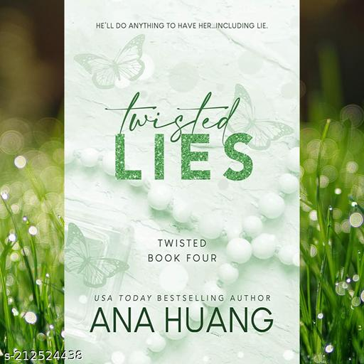

Twisted Lies is the fourth installment in Ana Huang's Twisted series, released on June 30, 2022. This New Adult Romance novel centers on the characters Stella Alonso and Christian
Harper, exploring themes of love, danger, and deception.
Synopsis
The story follows Stella Alonso, a shy and introverted social media influencer who is struggling to maintain her relevance in the competitive fashion industry. After being fired from
her job at a fashion magazine, she seeks a fake boyfriend to enhance her public image and secure sponsorship deals. Enter Christian Harper, a billionaire and her landlord, who is both
charming and morally ambiguous. He becomes intrigued by Stella and proposes a mutually beneficial arrangement: he will pose as her boyfriend in exchange for her companionship at
business events.
As their fake relationship develops, they face real threats, including a stalker from Stella's past, which forces her to rely on Christian for protection. Their connection deepens,
revealing layers of passion and complexity, as Christian's dark secrets threaten to unravel their burgeoning romance. The narrative is characterized by a slow-burn romance, rich
character development, and dual points of view, allowing readers to see both characters' perspectives.
Themes and Tropes
Fake Dating to Lovers: The central trope revolves around the evolution of their relationship from a contractual arrangement to genuine affection.
Morally Grey Characters: Christian embodies the archetype of a morally ambiguous hero, adding tension and intrigue to the story.
Slow Burn Romance: The book is noted for its gradual buildup of romantic tension, culminating in steamy interactions.
Reception
Readers have praised Twisted Lies for its engaging plot and character depth. The chemistry between Stella and Christian is highlighted as a significant strength, alongside the book's
ability to tackle darker themes, such as stalking and emotional trauma, while maintaining a romantic core. While it can be read as a standalone, familiarity with the previous books in
the series enhances the experience, as recurring characters and backstories are woven throughout the narrative.